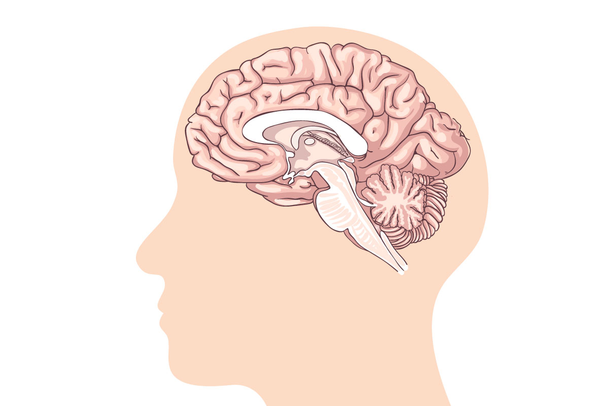
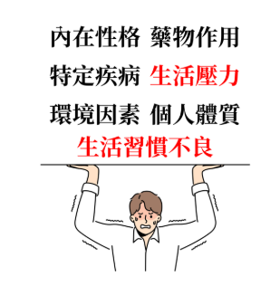
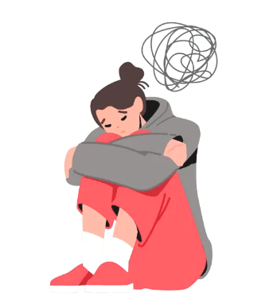
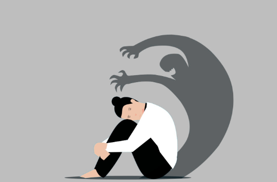
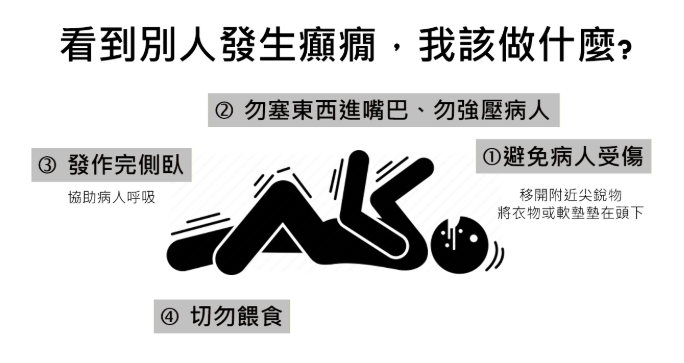
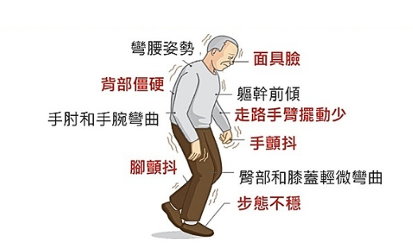
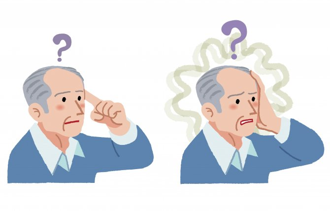
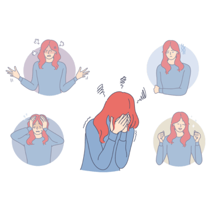

首頁
健康分析工具
Chat Bot
百萬小學堂
聯絡我們
自律神經失調
焦慮症
憂鬱症
癲癇
帕金森病
阿茲海默症
思覺失調症
心理神經系統
影響我們的思想與行動

涉及心理、神經和身體功能的多層面問題，包括心理障礙和神經系統疾病
自律神經失調
自律神經系統（ANS）中交感神經與副交感神經的功能失衡，導致身體多種功能異常的狀態。
病因
1.環境因素：如長期壓力、生活不規律等。
2.內分泌疾病：如甲狀腺功能異常。
3.心理壓力：如焦慮、憂鬱等情緒問題。
4.生活習慣：不良飲食、缺乏運動等。
症狀
1.身體症狀：耳鳴、心悸、胃腸不適等。
2.心理症狀：焦慮、失眠、注意力不集中等。
預防
1.改善生活方式：建立規律的作息和運動習慣。
2.壓力管理：學習放鬆技巧，如冥想和深呼吸。
3.健康飲食：攝取抗氧化食物，減少咖啡因和糖分攝入。
治療方式
1.藥物治療：根據病人的具體情況開具藥物，以改善症狀。
2.心理治療：通過心理諮商幫助患者調整思維模式。
3.生物回饋療法：使用設備監測生理反應，幫助患者學會控制身體反應。
4.生活習慣改變：包括飲食調整和運動計畫。

焦慮症
持續的焦慮和擔憂，影響日常生活。
病因
1.遺傳因素：家族中有焦慮症病史者風險較高。
2.環境壓力：重大生活事件或持續的壓力源。
3.神經化學失衡：大腦中某些化學物質（如血清素）的不平衡。
症狀
1.身體症狀：心跳加速、出汗、顫抖等。
2.心理症狀：持續擔憂、恐懼感、無法放鬆等。
預防
1.建立健康的社交支持系統。
2.定期運動和健康飲食以增強身心健康。
3.學習壓力管理技巧。
治療方式
1.認知行為療法（CBT）：幫助患者改變負面思維模式。
2.藥物治療：如抗抑鬱劑或抗焦慮藥物。
3.支持性療法：提供情感支持和建議。

憂鬱症
一種情緒障礙，表現為持續的悲傷感和對日常活動失去興趣。
病因
1.生物因素：遺傳易感性與生化失衡。
2.心理因素：低自尊、負面思維模式等。
3.環境因素：生活壓力、人際關係問題等。
症狀
1.身體症狀：疲勞、睡眠問題、食欲改變等。
2.心理症狀：絕望感、自我價值降低等。
預防
1.保持良好的社交聯繫，避免孤立。
2.培養興趣愛好，參加社交活動。
治療方式
1.藥物治療：使用抗抑鬱劑來調節大腦化學物質。
2.心理治療：包括CBT和人際關係療法（IPT）。
3.生活方式改變：包括運動和健康飲食。

癲癇
由大腦神經元異常放電引起的慢性神經系統疾病，導致反覆發作的癲癇發作。
病因
1.腦部創傷、腦腫瘤、腦炎。
2.遺傳基因突變。
3.其他：中風、先天性腦部畸形。
症狀
1.身體抽搐、意識喪失、短暫記憶丟失。
2.可能影響學習、工作能力和心理健康。
預防
1.預防頭部外傷（如佩戴安全帽）。
2.控制癲癇觸發因素（如睡眠不足、光刺激）。
治療方式
1.藥物治療：抗癲癇藥物（如拉莫三嗪、丙戊酸）。
2.嚴重病例可能需要手術切除致癇區域。
2.生活方式調整：健康飲食，避免酒精和藥物。

帕金森病
一種漸進性神經退行性疾病，主要影響運動控制。
病因
1.多巴胺神經元喪失：位於中腦黑質區域。
2.環境因素：農藥接觸、重金屬暴露。
3.遺傳因素：某些基因突變（如LRRK2）。
症狀
1.手抖、肌肉僵硬、運動遲緩。
2.晚期可能出現認知功能下降或抑鬱。
預防
1.高抗氧化飲食（如水果、綠茶）。
2.維持腦部健康的生活方式。
治療方式
1.藥物治療：左旋多巴（Levodopa）補充多巴胺。
2.深部腦刺激術 (DBS) 以減輕症狀。
3.物理治療：改善運動功能和肌肉柔韌性。

阿茲海默症
一種與記憶力喪失和認知能力下降相關的神經退行性疾病，屬於癡呆症的主要類型。
病因
1.腦內斑塊和纏結：由β-澱粉樣蛋白積累和Tau蛋白變化導致。
2.遺傳因素：APOE ε4基因突變。
3.其他：高血壓、糖尿病等代謝疾病。
症狀
1.記憶喪失、語言困難、判斷力下降。
2.晚期可能導致日常生活完全無法自理。
預防
1.保持心血管健康。
2.持續進行腦力活動（閱讀、學習新技能）。
3.健康飲食（地中海飲食）。
治療方式
1.藥物治療：阿塞那平（Donepezil）、美金剛（Memantine）。
2.支持性護理和心理治療。
3.鼓勵參加社交活動以延緩病情。

思覺失調症
又名精神分裂症，一種嚴重的慢性精神疾病，會影響思考、情感和行為，
病因
1.多巴胺系統功能異常
2.遺傳因素
3.神經發展異常
3.環境因素(如產前感染、營養不良等)
症狀
1.陽性症狀：幻覺、妄想。
2.陰性症狀：情感平淡、社交退縮。
3.陰認知功能障礙。
4.思維混亂。
5.行為怪異。
預防與治療
1.抗精神病藥物
2.心理社會治療
3.職能治療
4.家庭支持和教育
5.社區復健
